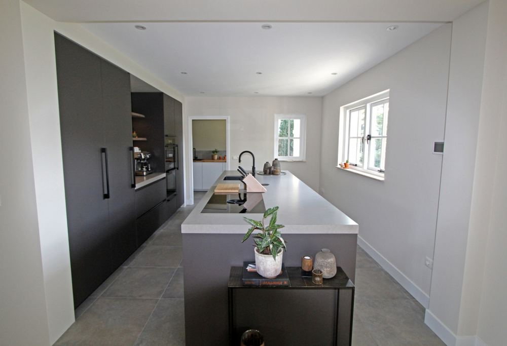
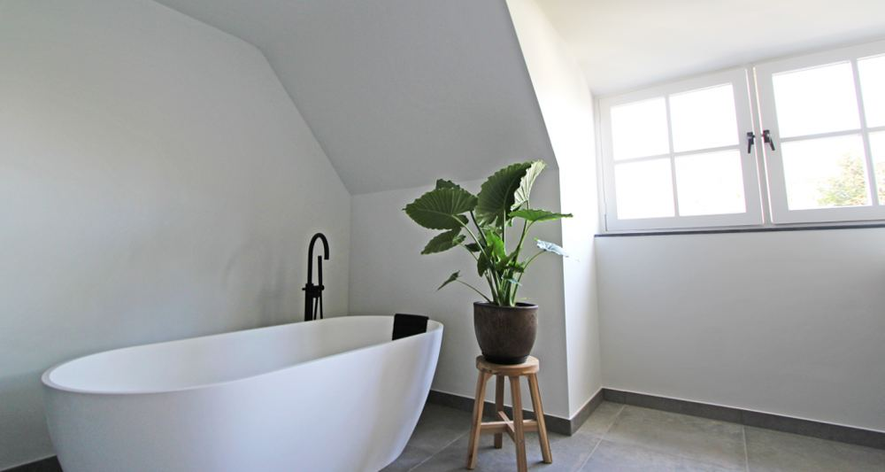

Bent u op zoek naar een schilder- of afbouwbedrijf? Wij maken graag tijd om uw wensen te bespreken en u van goed advies te voorzien, bij u thuis of op afspraak in onze showroom.

U kunt bij ons terecht voor schilderwerken binnen en buiten en gevelreiniging, maar wij zijn ook actief als stukadoor in Etten-Leur, met buitengevelisolatie en buitengevelstucwerk. Wij zijn actief in de regio West-Brabant.
Vakkundig schilderwerk en de juiste verf zorgen voor een langdurige bescherming van uw houtwerk. Voor onderhoud, renovatie en nieuwbouw.
Voor nieuwbouwwoningen ook renovlies: praktisch dezelfde uitstraling als stucwerk, sneller, voordeliger en zonder droogtijd.
Uw huis opknappen of restylen zonder gedoe. Wij verzorgen de stukadoors-, schilder- en afbouwwerkzaamheden van A tot Z, samen met onze partners.
Buitengevelstucwerk en isolatie, gevelreiniging en onderhoud, keimen en kaleien.
Voor timmerwerk, elektra en loodgieterswerk werken wij samen met ervaren, betrouwbare bedrijven.
Bij u thuis, of op afspraak in onze showroom op tijden die u goed uitkomen.
Een kleine greep uit onze gerealiseerde projecten, voor particulieren en zakelijke opdrachtgevers.




De eigenaren Hans en Petra Thijs zorgen er samen voor dat de werkzaamheden waarvoor u opdracht geeft naar volle tevredenheid worden uitgevoerd. Thijs is in 1990 gestart als stukadoorsbedrijf na overname van de activiteiten van vader Jac Thijs, die al ruim 27 jaar actief was in de branche. Samen is dat ruim 50 jaar ervaring. Vanaf 2003 doen we ook schilderwerk.
Thijs Schilders- en Afbouwbedrijf B.V.
Concordialaan 8
4874 NZ Etten-Leur